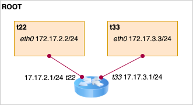

#1217 开发¶
构建本地开发测试用网络¶
使用 linux netns 创建一个如下的开发测试用网络：
（图中黑体为 netns 名，斜体为网络接口名 iface）
root ns 开启转发功能，在网络中相当于的路由器角色。
echo 1 >/proc/sys/net/ipv4/ip_forward
echo 1 >/proc/sys/net/ipv6/conf/all/forwarding
RTNETLINK answers: Permission denied¶
# ip addr add dev veth0 fc00:dead:cafe:1::1/64
RTNETLINK answers: Permission denied
修改 /etc/sysctl.conf 中的 net.ipv6.conf.all.disable_ipv6 为 0。然后执行 sysctl -p 生效。
IPv6 地址表示法¶
IPv6 地址一共 128 位，一般分成 8 组，每组 16 位，每组使用 16 进制表示，组与组之间使用冒号隔开，例如： 2001:0db8:0000:0000:0000:ff00:0042:8329 。
地址还可以通过以下两条规则缩略表示：
- 所有前缀零可以省略掉，比如 0042 缩略为 42 。
- 像 :0000:0000:0000: 这样连续的零段可以缩略为 :: ，但一个地址只能缩略一次。
例如：
- 地址 2001:0db8:0000:0000:0000:ff00:0042:8329 可以缩略为 2001:db8::ff00:42:8329 。
- loopback 地址 0000:0000:0000:0000:0000:0000:0000:0001 可以缩略为 ::1 。
特殊形式 ::ffff:192.0.2.128 表示的是 IPv4 地址 192.0.2.128 。
LVS RS 上如何配置 VIP¶
比如我们给开发测试的 t33 环境加上 VIP 172.17.2.2：
echo 1 > /proc/sys/net/ipv4/conf/eth0/arp_ignore
echo 2 > /proc/sys/net/ipv4/conf/eth0/arp_announce
echo 1 > /proc/sys/net/ipv4/conf/all/arp_ignore
echo 2 > /proc/sys/net/ipv4/conf/all/arp_announce
ip addr add dev lo 172.17.2.2/32
我们来解释下上面的配置都起什么作用：
首先，arp_ignore，这个参数默认为 0，也就是网口收到任何本机 IP 地址的 ARP 查询都得响应，我们需要修改其为 1，也就是网口只响应本网口上绑定的 IP 地址的 ARP 查询，这样 eth0 网口上收到 VIP 地址的 ARP 查询就不会响应。
第二，设置 lo 上的 VIP 地址的子网掩码为 255.255.255.255。我们假设一个发出的包 IP 源地址为 VIP，目标地址为 172.17.2.1，因为 172.17.2.1 & 255.255.255.255 != 172.17.2.2 & 255.255.255.255，所以这个包就不会走 lo 口发出去，而是需要根据路由表找从哪个口出去，结果就是包从 eth0 口发出了。
最后，就是 arp_announce 起作用的地方了，我们假设上面给 172.17.2.1 发包的时候不知道这个地址的 Mac 地址，那么这个时候就需要进行 ARP 查询，ARP 包中会带上自己的 IP 地址（默认为要发的 IP 包的 IP，也就是 VIP）和 Mac 地址，路由器收到这个 ARP 请求会更新自己的 ARP 表，也就是会把源 IP 和源 Mac 放入自己的 ARP 表里面，这样路由器的 ARP 表就乱了，这是我们所不希望的，所以我们修改 arp_announce 为 2，就是让发 ARP 包的时候忽略 IP 包的源 IP，而使用网口的 IP 作为源 IP。
一个小目标¶
实现 IPv4 包的封包、转发、解包逻辑。完成的结果就是在 root ns 里 curl 172.17.2.2，网络包经过 22 ns 里的 director 转发给 33 ns 里的 HTTP 服务器，服务器再直接给 curl 回复。整个过程如下图所示：
使用 scapy 构造发送网络包¶
导入 scapy 包：
>>> from scapy.all import *
构造并发送网络包：
>>> pkt = IP(dst="1.2.3.4")/TCP(dport=22)/"data"
>>> send(pkt)
如果发送后需要查看返回包，可以使用 sr（发送并接受回包）、sr1（发送并接送第一个回包）函数。
如果需要发送自定义二层协议头的网络包，那么则需要使用 sendp/srp/srp1 函数。
>>> pkt = Ether(dst="62:99:fb:32:b5:7a", src="22:7f:ff:10:c1:7f")
>>> sendp(pkt, iface="eth0")
查看所有的命令函数：
>>> lsc()
查看支持的协议、协议的字段名以及默认值：
>>> ls()
>>> ls(Ether)
dst : DestMACField = (None)
src : SourceMACField = (None)
type : XShortEnumField = (36864)
其它一些查看包的常用函数：
>>> hexdump(pkt)
0000 45 00 00 2C 00 01 00 00 40 06 6A B7 0A 00 02 0F E..,....@.j.....
0010 01 02 03 04 00 14 00 16 00 00 00 00 00 00 00 00 ................
0020 50 02 20 00 A6 DD 00 00 64 61 74 61 P. .....data
>>> pkt
<IP frag=0 proto=tcp dst=1.2.3.4 |<TCP dport=ssh |<Raw load='data' |>>>
>>> pkt.show()
###[ IP ]###
version = 4
ihl = None
...
###[ TCP ]###
sport = ftp_data
dport = ssh
...
###[ Raw ]###
load = 'data'
一个示例代码，给上面 t22 ns 里绑定的 VIP 发一个 ping 并打印出其回复：
>>> IFACE_22_MAC = "a6:19:1e:5e:ca:98"
>>> NS_22_IFACE_ETH0_MAC = "ce:35:1f:4d:af:a0"
>>> srp1(Ether(src=IFACE_22_MAC, dst=NS_22_IFACE_ETH0_MAC)/IP(src="172.17.3.1", dst="172.17.3.3")/ICMP(), iface="t22")
Begin emission:
Finished sending 1 packets.
*
Received 1 packets, got 1 answers, remaining 0 packets
<Ether dst=a6:19:1e:5e:ca:98 src=ce:35:1f:4d:af:a0 type=IPv4 |<IP version=4 ihl=5 tos=0x0 len=28 id=25877 flags= frag=0 ttl=64 proto=icmp chksum=0xb7a5 src=172.17.3.3 dst=172.17.3.1 |<ICMP type=echo-reply code=0 chksum=0xffff id=0x0 seq=0x0 |>>>
__attribute__((packed))¶
https://gcc.gnu.org/onlinedocs/gcc-4.0.2/gcc/Type-Attributes.html
typedef struct
{
char c;
int i;
} unpacked_struct;
typedef struct
{
char c;
int i;
} __attribute__ ((__packed__)) packed_struct;
printf("unpacked: %ld, packed: %ld\n", sizeof(unpacked_struct), sizeof(packed_struct));
运行结果：
unpacked: 8, packed: 5
告诉编译器取消编译过程中对结构体的字段进行对齐优化，按照实际占用字节数进行对齐，防止不同机器编译出的结构体内存结构不一样，导致结构体字段访问出问题，一般定义网络包格式的结构体都会使用这个属性标示。
‘gnu/stubs-32.h’ file not found¶
编译的时候报 'gnu/stubs-32.h' file not found 这个问题暂时可以通过安装 32-bit glibc 的方法解决：
$ yum install glibc-devel.i686
后续应该参考 https://github.com/cilium/cilium/issues/368 里提到的提交一样修改代码不使用 stdint.h 中的类型？